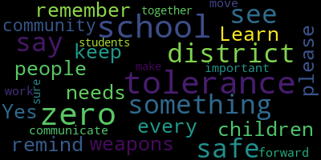

AI-generated transcript of Medford School Committee 02/27/18
English | español | português | 中国人 | kreyol ayisyen | tiếng việt | ខ្មែរ | русский | عربي | 한국인
Back to all transcripts
[Unidentified]: This is just one example. This is just one example. It's important. I'm going to give you a quick rundown of what we've been up to. We've had a lot of fun. We've had a lot of fun. We've had a lot of fun. We've had a lot of fun. We've had a lot of fun.
[SPEAKER_04]: So I'd first like to talk about a poll that I took. I asked my friends if they feel safe in school or not. And 13 out of 14 of them said they weren't. And that's 93%. An accurate or acceptable number. So we need to do more to try to make the children feel safe in school. Because our schools are supposed to be more safe than our homes, and we're not sure where we're supposed to feel safe anymore. I'd also like to talk about the Los Angeles. I've been going to Mexico City for two or three years since kindergarten, and we've had one. And we sat in the pool and hung out all day. I feel like you all can tell the other sisters, and it's hard to explain, but that's all I'm going to say.
[Unidentified]: I would like to ask that we would get the chance to have a few student speakers who should be able to speak this evening and maybe talk a little bit more before we get to the session. I worked in the mayor's office, the mayor's office, the mayor's office, the mayor's office, the mayor's office, the mayor's office, the mayor's office, the mayor's office, the mayor's office, the mayor's office, the mayor's office, the mayor's office, the mayor's office, the mayor's office, the mayor's office, the mayor's office, the mayor's office, the mayor's office, the mayor's office, the mayor's office, the mayor's office, the mayor's office, the mayor's office, the mayor's office, the mayor's office, the mayor's office, the mayor's office, the mayor's office, the mayor's office, the mayor's office, the mayor's office, the mayor's office, the mayor's office, the mayor's office, the mayor's office, the mayor's office, the mayor's office, the mayor's office, the mayor's office, the mayor's office, the mayor's office, the mayor's office, the mayor's office, the mayor's office, the Now, we spend more time concentrating on the value and the quality of health of the people that are suffering or making it through this slower community. Slower also means that we, the parents, we have spoken to a lot of people in the community. When we do our speech, we prefer to go into the community and let them know about us. that we have to see. So with that, I want to thank you guys for being here. Thank you for coming out tonight. Thank you. Thank you. Thank you. Thank you. Thank you. Thank you. Thank you. Thank you. Thank you. Thank you. Thank you. Thank you. Thank you. Thank you. Thank you. Thank you. Thank you. Thank you. Thank you they've heard about and listened for. In the past, we've been trying to think of a new way to stop it. But really, there's a long-term vision or a plan that we're hopeful of. a lot of time with our teachers. So when we feel that there is a problem in the classroom with our teachers, what's the worst that can happen? We do some things here to help contribute to the dialogue. And if someone really, really, really wants our help, we will be happy. But we feel people don't think about you when you're a disabled single adult person. And I agree with you about how a lot of what we know matters. It doesn't matter how we've been present here. And I don't know, but each of us do our part. And my advice is, you need to engage with males lately. They're not the same age. They're not the equal age as you. Don't tell me, well, I'm a woman. I'm not a girl. Listen to public opinion and know what you can expect, listen to your heart, listen to your soul. Listen to your dreams, grow past your fears. and all that we have seen through the years. Recently, I was talking with a friend about this, and a friend kept telling me about this. He reminded me that this isn't who we are, that our remembrance is not what we are when we think of who we are as a community. Who we are is a community that has its own representative and social problem. I'm going to have to get out of this thing.
[SPEAKER_13]: to have a conversation about NHS security and a way to move forward. As students are the people that security is meant to protect, they came to the table today with ways that would help them feel more comfortable preparing for AP exams and practicing for a basketball game, the things that they knew really well. There's no longer any excuse for talks about security and gun safety to solve as students are an untapped resource that need to be dependent on when moving forward and making decisions in this issue. For now, the students will walk out on March 14th and we will fight for a future where we will feel more safe. For now, number one, the culture of secrecy is over in New Medford. Medford is changing and we have new expectations for the integrity of our school teachers. Number two, we are willing to talk about a compromise between safety and freedom. And number three, we don't want a culture of fear. We don't need metal detectors at every front door, but we want to have a part in making our education, our future, and our lives safe. Thank you.
[Unidentified]: I'm going to make a motion to go into executive session.
[SPEAKER_06]: Is there a second? Seconds on this prep.
[Unidentified]: Roll call vote.
[SPEAKER_05]: I want to make sure that every person feels heard, and that there's nothing, I don't want to repeat what happened the other night by any means, but I was away, and I just want to make sure that every person is ready for us to move forward before we do that.
[SPEAKER_06]: There's a motion on the floor to go into executive session, seconded by Ms. Crosby. There's a roll call vote. I'm sorry, there's motions on the floor. Can we see them together? No. Yeah. Yeah. Yeah. Yes. About a four in the affirmative, three in the negative. We will now enter executive session. We will come out at the conclusion of that.
[Unidentified]: Hello everyone.
[Burke]: Thank you so much for remaining here for this very important matter that we just took under consideration for multiple hours. And at this point in time, I'd like to announce what the committee has adopted in executive session. Effective April 30th, mutually, the superintendent will retire from the city of Medford public schools. He shall coordinate any and all security issues with the chief of police or his designee going forward. No administrative, principal, personnel appointments or non-contractual salary adjustments without the approval of the school committee. And after April 30th, this committee will contract with the current superintendent for budget and transition up to 25 hours a week at its current hourly rate. Also, while we were in committee, we discussed many other items that are germane to this conversation. First and foremost, we believe that there should be a director of security for public buildings, and we will do everything we can to work with the city council in order to do so. That will take consideration of the school department buildings as well as the city buildings that we maintain. We will work on enhanced communication protocols with our community relations subcommittee that Mr. Ruggiero is the chair of. We will move forward on ALICE training. We will establish a school safety advisory committee. We will publicize the tip line that we currently have in place for our police department that can be utilized for other matters. And we really want the students at Medford High to be aware of that tip line so that they can use it if they see fit. We will pursue a security audit of the schools in conjunction with the city council. I believe that takes care of all the matters that we discussed in executive session.
[SPEAKER_11]: Ms. Bandicloup? Ms. Bandicloup. I believe that we wanted to take up one of our policies now. We need a vote on this.
[Van der Kloot]: Oh. Motion of approval.
[Burke]: There's a motion on the floor for approval of this. Seconded. Seconded by Mrs. Kreatz. Roll call vote please.
[Kreatz]: Mrs. DiBenedetto? No. Mrs. Kreatz, yes. Mrs. Mestone? Yes. Mr. Ruggiero? No.
[Ruggiero]: No.
[Kreatz]: No. Mr. Russo? Yes. Mrs. Van der Kloot? Yes. Mayor Burke?
[Burke]: Yes. 5 in the affirmative, 2 in the negative. The motion passes. Also, as people are aware, we had an incident report policy that was in place. We have worked over the last few days with both our deputy superintendent and our assistant superintendent and the superintendent. to really beef this policy up. And the school committee was just given this tonight. So there hasn't been a lot of time to look at it. But we really feel strongly that something needs to be put in place. So this may be a starting point. And over the course of the next few meetings, should we need amendments to this policy, certainly we will entertain them. But at this point, we want to get a very strong policy in place that captures some of the some of the items that may have transpired. And I know that Mr. Russo will have an amendment, but basically we've set up this incident report policy with the following definitions. Discovery. It has three pillars, discovery, notification, and disposition. Discovery, finding any object or observing any situation that applies to the safety and security of the school and or school district, which would negatively impact the well-being of students, faculty, and staff. Notification, verbal and or written communication to the appropriate authority, including but not limited to the police department. Disposition, reporting of actions taken and conclusions reached that describe and explain the nature of the threat and or behavior identified, as well as any recommendations that emerge from the investigation. So the policy, the draft policy that's before us tonight reads, any individual discovers an item including but not limited to weapons, ammunition, explosives, drugs, any contraband items shall notify the Medford Police Department immediately and inform the principal. If the principal cannot be reached, the individual who discovers the item should notify the superintendent of schools. This process will be in effect on a 24 hours a day, seven days a week basis. As soon as possible, the principal shall prepare written reports surrounding the incident and submit to the superintendent of schools. The school administration will promptly notify parents of situations that may affect the well-being of students, faculty, and staff. These notifications will be done consistent with applicable law, regulations, and policies of the Medford Public Schools. Additionally, principals are required to immediately notify the office of the superintendent of schools about other incidents, including but not limited to accidents, fires, and suspension expulsion of students. Written reports concerning the incidents must be submitted to the superintendent no later than the next day following the incident. The principal or his or her designee must also notify the mayor and members of the school committee as soon as possible. Finally, upon disposition of the investigation, Superintendent, in conjunction with the Police Department, will provide an appropriate written report to the Mayor, School Committee, and Principal. This report shall include the facts surrounding the situation, conclusions reached, as well as any recommendations to be considered. Mr. Russo, I believe you had an amendment to that?
[Ruseau]: Yes, I would like to add to the policy a statement that this will be integrated into all annual reviews, contracts for rentals of school facilities, and the student handbooks.
[Burke]: Motion of approval. There's a motion on the floor as amended. Is there a second? Yes. Second by Ms. Mustone. Roll call vote please on this policy.
[Kreatz]: Mr. Benedetto.
[DiBenedetto]: Yes.
[Kreatz]: Mrs. Kretsch. Yes. Mrs. Mustone. Yes. Mr. Ruggiero. Yes. Mr. Russo. Yes. Mrs. Van de Koop. Yes. Mayor Burke.
[Burke]: Yes. 7 in the affirmative, 0 in the negative. The motion passes, policy adopted. And finally, I just want to say that We did not take this decision lightly. We considered all different perspectives on this matter. We also considered the multiple years of service that this superintendent has provided to this community. He has been a leader in our educational community. He has built new schools for this community. He has enhanced so many opportunities in our school system. We do not take those things lightly. And he has always been a stalwart in everything that has been good about our system and will continue to be. We have a lot. We have a lot of important matters that are before us. We have a transition that we've already announced for our new superintendent. The search committee has been meeting in the other room all evening, starting the process without the three members of the school committee. So we are moving forward in that process. We have contract negotiations. We have the closeout of the school year, as well as the budget for the subsequent year. We have a lot of things that we have to move forward in this community. And above and beyond all of that is the safety of our students as well as the teachers and everyone that works in our school system. That is our top priority to move forward. And we have to do this as a community. And I know that there are other members of this body that would like to say a few words because this has probably been one of the most difficult week and a half that I think most of us have had. Is there anyone that would like to? Ms. Vandekloot?
[Van der Kloot]: First, thank you for everybody who's written to us. No matter what side of the issue you're on, I know that everybody was very upset and that You can disagree with the superintendent's decision, which many of us did, but you still know he is a good man. He has served this community well, and it was important as we figured out what we were trying to do or how we would go forward that we needed both a place where we could begin to mend this community, that we could support our teachers and administrators who serve us every day and we could go forward and also appreciate the fact that the superintendent has served us for 50 years and many of us, you know, really appreciate that. How do you measure a man? Is it a moment of a decision you disagree with? Or is it the totality? As we looked at the decision today, for me, it was the totality. So that's just what I'd like to say.
[SPEAKER_11]: Thank you.
[Kreatz]: So I just wanted to say that this has been the most difficult, like, two weeks. And I've been struggling every day. I've been heartbroken, upset, angry. You know, it was a bad decision. Superintendent has taken ownership of it. It's just unfortunate that it happened at this particular time. I'm glad that nobody was hurt. And, you know, Superintendent Belson has 50 years of service, 23 years as a superintendent. It's just incredible everything that he's done for our schools. And we have to remember that. We have to remember all the good things that were done here. There was the one poor judgment, but there's been so many great things. So it's time for us to get back to work, get back to school, implement the safety procedures and practices, and we need the community's help. We still need your help. We want to protect our children, and whatever cost it takes, we're going to make sure that we do that. So I appreciate all your messages. It will take us some time to get back to all of you. So please be patient, but we will. And I just want to thank everybody for your patience, and the police department for doing all the searches, and everybody just stepping up and getting out there and, you know, just giving a good word or some feedback. It's just been helpful. And I just want to thank, you know, my colleagues tonight for this session. And it was very difficult, and I know in my heart that I made the right decision. Thank you very much.
[Burke]: Mr. Ruggiero.
[Ruggiero]: This week has been challenging for all of us. I want to thank the hundreds of people that have reached out to me to talk about this issue. If anything, please keep those emails coming. It would be great now that we have these lines of communications available, that we talk about more constructive things moving forward. And everyone's opinion here is greatly valued to me, and I thank all the members here at the school committee. So please keep those messages coming. If we're going to do this, we're doing this together.
[Burke]: Thank you. Mr. Benedetto. Thank you.
[DiBenedetto]: So I would just like to remind people that not only our school district, but every school district needs to remember that there is a zero tolerance for weapons in our schools, where we keep our children safe. Zero tolerance. And if you see something, please say something. Learn from our community how important it is to communicate and to move forward and to work together to make sure our students are safe. Again, zero tolerance. See it and say it.
[Burke]: Mr. Russo.
[Ruseau]: Thank you. So this has certainly been as everybody else has indicated and I think everybody here has experienced a week that I hope we don't have to ever have again. Last Thursday's meeting was was, I guess it spoke for itself. And, you know, I've only been on the school committee now for eight weeks, which is, I guess, trial by fire. You know, I've responded to 250 emails this past week. And what struck me about the emails was that, without exception, they were the longest emails I've ever received in my life. I mean, these things were small novels, every one of them. And they were all very unique and passionate, and many of them were very conflicted, you know. Individuals were not necessarily on one side or the other. And I think that many of us on the committee have experienced that as well, where it's like, this is not a black and white issue that we've been dealing with. My children are in our schools. I felt like they were safe before December 28th or 29th. I have felt like they've been safe since then, and I felt completely that they were safe when they went back to school. And I say that knowing as much as any of us know about what has or hasn't happened. I think it's important to say that I sent my kids to school, and the only thing I was concerned about was, was the media gonna harass any of the kids, which... I don't think that happened, but I was never concerned for their safety. And that's really the most important message here, is that from a safety perspective, there's no safer place for our kids than actually in school. Those are just the facts. They might not feel like the facts, because we all see the news. None of us are ever going to be as safe as we were or we are as children in our schools. I have a much longer statement which I'll release tomorrow. I was going to read it, but I think you all are probably as tired as the rest of us, so thank you.
[Mustone]: I will be brief. I I'm excited that we have an action plan that we can all work on and moving forward Secondly Reverend Wendy and Reverend D came over my house today to talk about an interfaith service about peace in our schools I hope you'll all attend once we get it planned I think it's great for our community to come together for peace and Third is we were gonna have a Guinness in June and now we're gonna have a Guinness in April Mr. Superintendent
[Belson]: So I want to begin by apologizing to everyone for any disruption that my actions may have caused. Obviously, a decision was made that people don't agree with, but it also set off a whole series of concerns in the community, and that never was my intent. I'm confident that Medford has a bright future for its school system. We have a lot of good things in place. We have a terrific faculty, terrific administrators, wonderful supporters, people that have worked hard to partner with our schools. And I know that we will get a lot done in the next several months. and that the new administration coming in will come and build on a firm foundation. Mayor's words. And I think that the reality for all of us is to get beyond, to work to learn from this situation, and to grow together, and to make sure that we do everything we can to protect the children and families of Medford. Additionally, we will work much more closely with the police department. We have for many years. This was an exception, but I have a lot of confidence in our police department and Chief Sacco and others. And I want to make sure that everyone realizes that we will do everything we can to keep our young people safe. Thank you for being here tonight. I appreciate your support and I appreciate your understanding. Thank you.
[Burke]: Oh, yes. I just wanted to make a very quick comment. I had the privilege to stand next to some amazing teachers today at the McGlynn School, and administrators, and staff. And everyone stood so tall today for the benefit of our children. And if you just spent a few minutes there, you would have seen it in action. And they're some amazing people. And they're not just at our McGlynn School. They're in all of our schools. We have a wonderful school community. They're caring, they're nurturing, and they put their children first, all of our children first. And so to them and to all of you who are here tonight that represent them, I thank you personally for all of your hard work. We know this has been difficult for you as well. And we are here to support you and to move this community forward. And just thank you from the bottom of our hearts. Thank you all. Thank you. Motion to adjourn. Motion to adjourn. Thank you. Thank you.
Burke
total time: 8.65 minutes
total words: 1333

|
Van der Kloot
total time: 1.23 minutes
total words: 175

|
Kreatz
total time: 1.86 minutes
total words: 311
|
Ruggiero
total time: 0.52 minutes
total words: 94
|
Ruseau
total time: 2.65 minutes
total words: 394
|
DiBenedetto
total time: 0.76 minutes
total words: 82

|
Mustone
total time: 0.44 minutes
total words: 88
|
Belson
total time: 1.38 minutes
total words: 237
|
|
|
|
|
|
|
|
|
|
|
Back to all transcripts
{kind=link}
{kind=link}
{kind=link}
{kind=link}
{kind=link}
{kind=link}